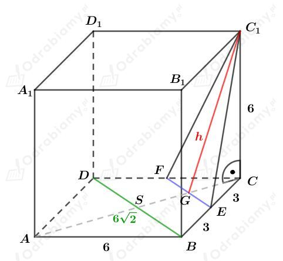
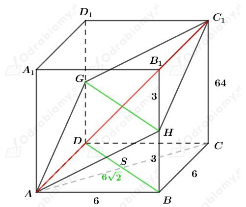
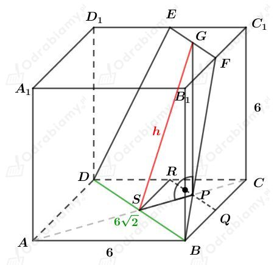
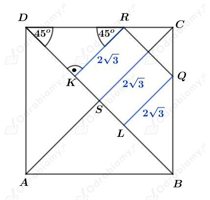
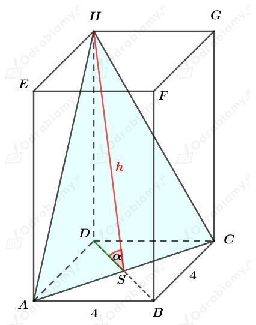

a)
Rysunek:

Zauważmy, że
oraz
Korzystając z twierdzenia Pitagorasa dla trójkąta GCC1 mamy:
Obliczmy pole trójkąta FEC1. Mamy:
b)
Rysunek:

Punkty G i H są środkami krawędzi - odpowiednio - DD1 i BB1.
Zauważmy, że odcinki AH, HC1, GC1, AG to przeciwprostokątne w trójkątach prostokątnych o przyprostokątnych długości 3 cm i 6 cm, więc:
Z powyższej równości wynika, że czworokąt AHC1G jest rombem.
Skoro punkty G i H są środkami krawędzi DD1 i BB1, to
Odcinek AC1 jest przekątną sześcianu. Korzystając ze wzoru na długość przekątnej sześcianu wiemy, że
Obliczmy pole tego przekroju. Korzystając ze wzoru na pole rombu mamy:
c)
Rysunek:

Powstały przekrój DBFE jest trapezem równoramiennym.
Wiemy, że kąt PSG ma miarę 60o.
Rozważmy trójkąt prostokątny SPG. Korzystając ze związku między długościami boków w trójkącie o kątach 30o, 60o, 90o mamy:
oraz
Naszkicujmy kwadrat ABCD:

Zauważmy, że trójkąty KRD i BLQ to trójkąty prostokątne równoramienny, więc
Wyznaczmy długość odcinka KL. Mamy:
Skoro |KL|=|RQ|=|EF|, to mamy:
Obliczmy pole trapezu DBFE. Korzystając ze wzoru na pole trapezu mamy:
Rysunek:

Zauważmy, że
oraz
Wiedząc, że pole trójkąta ACH jest równe 16, to mamy:
Korzystając z funkcji cosinus w trójkącie prostokątnym ACH mamy:
zatem